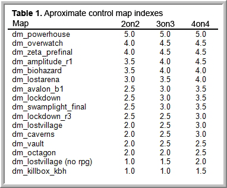

HL2DM 302 - Introduction to Teamplay
By Cynips
Contact: cynips [at] gmail [dot] com
Last updated: April 22, 2008 @ 1:14 am

Introduction
What makes teamplay so important? Well, the simple fact that teamplay can outweigh individual skills. With good teamplay you can beat a team that has players that are technically more skilled (better aim, better movement etc.) than yours. But in order to get there, there are a few things you have to understand first. Some of it might seem apparent or even obvious, or at least I hope this will be the case after you have finished this lecture. However, by starting with the basics and introducing some standard terms, I hope a team should be able to discuss different strategies and tactics with a minimum of misunderstandings.
You will find here a guide on how to build up teamplay as well as some general advice. The emphasis is on how you can find out what works for you in the real world, rather than being an essay into the intricacies of teamplay. For general playing advice, however, you will have to look elsewhere, since I assume that the reader is fairly familiar with both deathmatch and team deathmatch play. Overall, though, your aim should be to understand the game with your intuition, your feelings, as well as your reasoning, allowing you to both talk about and read up on it.
Terms
Strategy vs. Tactics
Strategy is your overall plan on how to win: e.g. controlling the rpg is probably a better strategy than controlling the mag on dm_powerhouse. Tactics, on the other hand, are the actual means used to gain an objective. In the
powerhouse example, this could be about how to get to the rpg first at match start or how to control the rpg area most efficiently.
Types of Skill/Advantage
Technical
Movement, aim, reflexes.
Tactical
Flexibility, adaptability, map understanding, perception of the now, reading your opponent.
Team
Communication (both listening and speaking), strategy, tactics and adhering to them.
Computer
Hardware (cpu, gpu, keyboard, mouse, headset, etc.), software (windows setup, configs, vent/TS), network connection.
Types of Players
Every player is of course a complex combination of different levels of different kinds of skills. Usually, though, you will find a number of typical players:
First, there is of course the n00b with low level everything.
Another relatively common type of player, is the one that, although technically skilled, lack in teamplay proficiency. This is the skiller. Those that on top of that strongly dislike spam I call scrubs (see http://sirlin.net/ptw).
Next, you have your average guy who plays a good deal, but as he claims it is "mostly for fun", he probably has not thought through his tactics to any greater extent. You also have the not so technically skilled player,
trying to make up for this by playing maps that are easy to control if you have either better map knowledge or simply more luck with the spawns. We could call this type the camper or spammer.
Last, but not least, we have a really good player who is proficient in all skills in a balanced way. Let us just call him the pro.
Types of Maps
To make things easier, you can put maps on a scale depending on how readily they have something both worth and possible to control. I will call this the map's control index, ranging from 1-5, which is somewhat dependent
on the number of players (Tab. 1). In one end of the extreme you will find maps that end up in a campfest, like dm_powerhouse (index value 5), while the opposite is nonstop action with little to no thought involved such as a typical
killbox (index value 1). However, for our purposes, a better example of a low value would be dm_lostvillage if played without the rpg (index value 2). In general, for any map, the control index will increase with the number of
players, since fewer resources per player means greater potential for successful control.
A good map should have a value close to 3, encouraging all of thought, communication and technical skill. In a way, players can also be generalized to fit onto this scale. Depending on how their technical skills compare to their tactical skills, they tend to choose a map accordingly. As the balanced player the pro is, a map with a value of 3 suits him the best since he can then exploit the weaknesses of any other kind of player.
Key Map Qualities
While considering these qualities, remember that they all contribute to creating an overall result. Without spawn points or weapons there wouldn't be much fighting going on no matter how ingenious the layout.
Resources
By a balanced map we do not primarily mean one that is symmetric in design, but one where weapon and item placement promotes a balance between technical and tactical skills. This quickly becomes apparent if you consider a map with an rpg as the single item compared to one where all sorts of weapons are to be found everywhere. The former degrades into spawn luck followed by a campfest, whereas the latter would not exactly be much more of an encouraging experience. Balance is attained if you give teams the opportunity to control items at the same time as giving them an equally good reason to move around. You also have to realize that any given map is best balanced for a specific number of players.
A special feature of HL2DM is that you can use your gravity gun to manipulate items that you cannot include in your inventory (usually named props). There is the kind that you can destroy (e.g., crates and exploding barrels) basically being a kind of moveable ammunition. Just as regular items you can control these by simly destroying them. Props like radiators and cabinets, on the other hand, are indestructible but you can either move them around or in some cases get rid of them by throwing them out from the reachable parts of the map.
Layout
a) Symmetry/Balance: a map cannot really be balanced without a proper layout. A single large room with a shelf some ways up would be considered extremely unbalanced, all other things being equal. A symmetric map can often seem somewhat boring, and if truly symmetric will even be confusing when it comes to knowing in what part of the map you are. There is also the risk that the two teams set up camp in opposite corners of such a map, resulting in extremely boring gameplay.
b) Size: appropriate size is of course important, but this should be self-evident enough to not really warrant any further discussion. Just keep in mind that appropriate size depends on the number of players.
c) Dimensionality/Complexity: most good maps have a decent compromise between boringly simple and mind boggingly complex. While it can sometimes be nice with a challenging map, you want to keep it intuitive. If it takes too long for players to learn a map, chances are it simply won't get played much. One of the reasons dm_lockdown is so hugely successful, is that everyone knows it so well. But have you ever considered why dm_underpass is not more popular?
d) Variation: not only does variation make for less boring game play, but having different themes/architecture in different parts of a map makes it easier to relate to and communicate your whereabouts.
e) Control Points: these are built around items of high value, e.g. the rpg platform on dm_powerhouse or the items under the stairs on dm_lockdown (2 smg nades, 2 health packs, 1 orb & 1 shotgun).
f) Choke Points: points of a map which you almost certainly have to pass in order to get to another area, especially important if that area contains a control point.
g) Crossroads: areas which can be accessed by three or more paths, making anyone there unusually susceptible to crossfire.
Flow
A map in which players both can and will move around readily is a fluent map. Generally, you will find that enemies are easier to control in a map with low flow since they move slower and, hence, are more predictable.
a) Connectivity: the more ways there are to get from A to B, be it by interconnecting passages, lifts, bounce pads or teleports, the higher the flow.
b) Ease of Movement: it is naturally more difficult to move around in a map cluttered with debris, narrow passages, ladders.
c) Incentive: this comes back to resource balance. By giving the player a reason to move around, picking up resources, you effectively combat camping and thereby will see gamplay with more flow.
Spawn Points
In general, I think everyone will agree with me when I say that a good map is one where the element of chance is minimized. In any map, we all know that spawning is random (except that you cannot spawn at a point which someone else is already occupying). Things that can remedy this are:
a) Trying to keep down the control index of the map.
b) Seeing to it that no particular spawn point is closer to a control point than any other.
c) Avoiding placing spawn points so that they can be camped from a position that has other reasons for guarding (such as a control point, a choke point or a crossroads).
In addition, look out for areas with a high concentration of spawn points, potentially making them valuable enough on their own to justify controlling. There are of course other map qualities like eye candy, light conditions, sounds and frame rate, but they are more general and of secondary importance to what we look for in a team deathmatch map.
Planning
Analyzing the Map
Get a screenshot that you can use as an overview image for the map (http://developer.valvesoftware.com/wiki/Level_Overviews) or use spectate. Now you can learn the map, note important items and mark all spawn points, trying to memorize them.
Next, try to determine the map's control index, and after that check for choke points and spawn points/areas which you might use to carry out a good strategy. You should also give names to positions you might need to communicate about (but only these). Try to use names which are informative in themselves, so natural that even a new member of your team will be able to understand what you are talking about without ever before having heard these names. Obvious examples would be the rpg, container and tank areas in dm_lostvillage, but also grass and gate if you give it a seconds thought. If you have to make up less intuitive names, try using ones you are already using in another map. That way you will immediately recognize it as a place name, no matter what map you are playing.
As an exercise, think of paths to take from every possible spawn point, given certain tactics and certain circumstances. You might want to go item/resource hunting or you might just want to avoid being killed upon respawn. It is not only good to know your choices in advance but you will better be able to predict your enemie's behavior when he is in the same situation.
Understanding Your Team
First of all, you need a team with players you get along with. Ideally, they should also be on the same level as you when it comes to both ambition and skills. Whatver the actual composition of your team, simply being aware of its dynamics could spare you a lot of frustration and disagreement.
Besides judging the different kinds of skills mentioned above, players usually exhibit different degrees of aggressiveness. Some tend to charge head-on all the time, while others play more defensively. Use these qualities in trying to assign different roles in-game. On dm_biohazard, e.g. you will do well with a player with good aim wielding the rpg and crossbow in the main area. Someone taking care of the ar2, on the other hand, needs good movement, watching out for enemy spawns as well as being keenly aware of his team mates' whereabouts whenever he wants to spam orbs. In this sense, you can say that HL2DM has some elements of a class based shooter. Though not pronounced, it may help you in making the best of your team's skills.
Work on understanding your weaknesses, maybe watching demos in order to figure out how the enemy is exploiting them. Once you are aware of which are the crucial ones, you stand a much better chance at doing something about them.
Understanding Your Opponent
Try to see how your opponent matches the different stereotypical players. Understanding this will provide a shortcut to predicting his actions. Always keep in mind, though, that he is in reality more complex than a mere stereotype.
The n00b is usually only a problem to the extent that he has beginners luck. This luck comes from the n00b's inexperience, which allows him to do unpredictable things. Things, no one "in their right mind" would choose to do if they were fully aware of the circumstances. As an example of something along these lines: I am sure many agree with me that there is nothing harder than hitting an opponent who is unaware of the attack. Just because he is unaware of the attack, he will not perform those "best" moves to avoid being hit that you have come to expect.
The camper should be countered with an equal knowledge of the specific map from your side. Try to see to it that whenever the two of you meet, it is not in a place where he has a map control advantage.
The average guy should almost be less of a problem, because if you have learned your lesson you not only have an advantage in skills, but also in map knowledge.
The skiller likes "dm_lostvillage without rpg" because he has no overall tactic other than running around in a loosely held together squad. Since lostvillage without rpg has a low control index, however, there is very little you can do against this type of play. And in the same way it is difficult to hit a n00b because he moves unpredictably, these guys are difficult to predict because they might not even know themselves where they are going next. One way to deal with this is to insist on the use of all weapons, thereby introducing the rpg and, hence, a control point in the map. Now you have something to build a strategy around.
The pro makes for the toughest opponent, or he would not be called the pro in the first place. If you find yourself in an expected disadvantage from a map control perspective, consider carefully your alternatives of either rushing him, if you think you have a chance, or simply staying away in order to minimize your losses.
Playing
General Advice
Do not try too much to camp positions. If you do, there is a good chance the other team realizes there is a pattern of where your guys are. Work instead on being fluid as a team, readily going to where resources spawn while at the same time making it difficult for your opponent to communicate your whereabouts. This becomes more important on larger maps like dm_lostvillage and does not demand much of set tactics; a good way to have both a beginners' and an experienced team work together, especially if you for whatever reason do not have much of any other tactics worked out. Try to be the ones taking the initiative, chosing when, where and with what weapon you engage the enemy. This comes with moving around, being aware of what places give you the upper hand, while at the same time trying to catch your opponent by surprise. And even if you come by a camper waiting in ambush, you are moving while he (initially) will be the stationary target.
There are more reasons why it usually is a good idea to stay loosely together in a squad. Not only will there be more of you to attack your opponent, but also more eyes and ears to detect his whereabouts. However, remember the loosely part so you can avoid taking communal splash damage. Also, if there are two or more of you in a fight against a single opponent, make sure that at least one of you use a spray weapon to guarantee some damage. Two mag whores completely missing the same target because of bad hit reg will not win you any matches.
There are other ways of helping each other. You can have a team mate crouch and then you jump up on a him in order to reach higher places. With a lot of practice it is even possible to walk together like this (aka Pubmaster Walking). If friendly fire is off you can use explosives or orbs to give your team mates a boost.
Think about sharing resources - if you come across two suit packs, leave one for your team mate so that you both can survive a crossbow hit. Or, if you pick up a mag, maybe you should leave that shotgun for your team mate. Also, if the two of you now go together, let him go first with the shotgun, leaving you to back him up with the magnum. The reason for this is that the shotgun is better at close range, while the magnum deals the same damage irrespective of distance.
Try to avoid crossing into the line of fire, which you already know from tactics talk, that your team mate might be shooting in in any second. Use an alternative route or announce clearly your intentions well before making the move. Or even more general, be aware that using crossroads always involves an increased risk. The more paths that are crossing, the higher is the risk that follows. This seems obvious, but by considering this beforehand you can often find alternative, safer paths or use it to your advantage since the enemy will naturally be more vulnerable here too.
Invariably, you cannot control everything on a map. You can then try harrassing your enemy into spending some of their ammunition in situations where you are better able to avoid damage than if you were actually attacking or, even worse, caught by surprise. If you have the rpg (or ar2 if you have come to the rpg area on dm_lockdown) do not drop it! And in some rare cases, if you have like 10 health and your teammate is nearby, go suicide next to him so he can have it instead and get three rockets...
Tactics and the Real World
HL2DM in general is a game where technical skills dominate tactical skills in all but maps with a really high control index. It does not help that you outsmart your opponent if you cannot hit him in that fraction of a second he has his back against you. So, do not overdo the tactical elements that you have to remember and try to pull off, as it might hinder you from concentrating on the actual playing. Any given tactic only works if your team is skilled enough, in itself and maybe in comparison to the opposition, such that you can manage to do the things you have set out to do. It is critical that you test your plans against real opponents. That way you get invaluable feedback so you can go back and improve on, or totally change, your tactics.
A common pitfall when trying out a new tactic in-game like this, is to forget about it and fall back into old habits. Give it some time practicing while concentrating on being organized and consistent, before you draw your final conclusions about whether or not that particular tactic is worth pursuing any further. Maybe you can use it in a modified form, maybe it is too complex and demanding to carry out or maybe it was doomed from the get go. Even if the latter is true, you have probably gained valuable experience in the process.
If you are new to teamplay, start simple and only work you way up once the simple plan is working. A simple strategy performed well almost always works better than a complex one carried out poorly. Should be obvious, but is worth mentioning.
There are always things you do without really being aware - both good and bad - and unless you notice them the only way you can improve these skills is by in-game practice. Nevertheless, try to at least spot your bad behavior before it gets too deeply ingrained. Record sourceTV demos and then look at them to figure out what you could have done better. Preferrably use in-game voice chat as well (sv_alltalk set to 0) since it is included in the demo. That way you can improve on your communications as well. You could also record ventrilo with the recording thing it has built-in, but that is annoying to line up with in-game actions.
Communication
The thing you are looking for, and that you find with players who have played together for some time, is that the need for comunication will always be there, but with experience the need will diminish. Players will instinctively know where their team mates are, how they play, what to expect, etc. And the more instinctive your teamplay becomes, the more efficient your communication is, the more you can concentrate on other things. So, knowing how to play with each other is extremely important - experience that comes only by spending time together. Remember to report your whereabouts and announce your intentions. Also listen to what your team mates are saying and be sure to tell them where the enemy is (or where he is not). However, there can be a lot of communication going on at times, so keep it to the essentials. Actually, an additional reason for staying together as a squad is that you do not need to communicate so much. Keep this in mind for those games where you for some reason cannot talk to each other - like broken microphone or language barriers. There is also the advantage of being able to concentrate better on your own playing and listen to sound cues like footsteps.
Sometimes it can be a good idea to assign one player in the team the role of captain. It will then be this player's responsibility to take the initiative whenever he thinks the team should change tactics, if you need to coordinate attacks, if he thinks you need to change the way you are communicating or to keep the team spirit up by, e.g., telling that whiner to stop a negative behavior that is affecting the whole team. If you do not have a captain, it is up to all of you to manage these things together.
As is the case in most European matches, having friendly fire turned on forces you to keep track of your team mates in order to avoid team kills. Sometimes the unavoidable happens anyway, but just accept it and concentrate on the game. Sometimes it can even be the better course of action if you also killed an enemy in a key position. In any case, do not curse at yourself or anyone else. The only emotions you should show are when you encourage your team mates. I cannot emphasize this enough. If a team killer apologizes, be sure to acknowledge him with a short "no problem" or he might think you are holding a grudge.
Do not get too caught up in the game, if you know what I mean, like sometimes with all the voice chat going on you can easily forget that the game is a lot slower than you think. It helps just to stop for a few seconds and think if you get overwhelmed listening to everyone. Basically, do not pay so much attention to everyone else that you forget to pay enough attention to yourself and die as a consequence.
In Control
The first thing to realize about controlling a valuable resource is that it does not mean simply camping in the vicinity. Unless the camp spot is really safe, any reasonably skilled opponent will soon pick up on your predictable behavior and use it to his advantage. Rather, control means preventing your opponent from getting his hands on the resource. You do this best by returning to get the resource before your opponent (by default, weapons respawn every 20 sec., items every 30 sec.), or by controlling nearby spawn and choke points. Analyze the map, so you now what is feasible given the number of players in your team.
Nevertheless, at times you will probably find yourself camping to some extent. When doing so, position yourself to be difficult to hit: stay high up and away from nearby walls; use the possibility to jump down if you are under heavy attack, making you a harder to hit target. Also, avoid standing still unless you need silence, either for listening or to avoid detection, to make you harder to hit. Personally, I have also found a tendency in me to lose the initiative whenever I stay put rather than move about.
Depending on the skills of your opponent you will find it useful to be flexible, both in actual positioning and tactics. This, so he will find it harder to predict your behavior. Most decent players know that when you have killed an opponent, he will come right back at you. With this in mind, he will no longer expect you to still be where you killed him, rather, it becomes a guessing game as to where you chose to relocate. Say you are playing a map with more than one control point, like rpg and orbs on dm_lockdown. A thing you might then try, especially in a 4on4, is having one person who is really strong, on his own controlling the ar2 with a xbow or so, like in football the libero. An extra advantage if playing with ff on, is that he would not have to worry too much about team kills.
Though not really recommended, you could theoretically position yourself at a spawn point to prevent an enemy from spawning there. On dm_lockdown, e.g., you might buy a team mate going for the rpg some time if you make sure no one spawns and quickly activates the fan before you can finish him off. Or, on dm_overwatch, if you are low on health and ammo and just killed your enemy on the mid level, why not make sure he does not spawn there just to finish you off. This might even give you some time to wait for those two nearby impact grenades.
Not In Control
Sometimes when you have lost control of an area you need to decide wether to use an aggressive or more defensive tactic. And even if you decide on the first, should you come charging as soon as you respawn or should you try to coordinate a rush from several positions at once. In the second case, should you try some kind of sneaky attack or simply tro to hide, possibly luring your enemy into an ambush. This last tactic can be extremely successful if you are in the lead, essentially forcing your opponent to go after you if he really needs the win.
Do not be afraid to change your tactics if you assess that the odds have switched in favor for another. If nothing else, it might confuse your opponent enough for you to get those winning frags. This can be particularly efficient if you have a few, loosely defined but basically different, tactics that you have discussed beforehand. E.g., start working around the tank area on dm_lostvillage instead of the container area.
Differences Between 2on2, 3on3 and 4on4
The fewer you are, the easier to keep track of each other and generally carry out your tactics. In a 2on2, I have found it best to team up with someone who has a playing style similar to your own. Since you tend to do similar moves, it becomes much easier for your (even without communicating much) to stay together, something which is crucial in 2on2 play. In general, the more players there are, the more difficult it will be to keep your team together simply because more players mean more information to pass around. Because of this, you may find it better to start your teamplay career by practicing 2on2's.
Psychology
If you are relatively new to teamplay, you will find that playing with a real team is something completely different compared to jumping onto a TDM server. It is a new situation, so your nerves will probably play a role but, more importantly, you will find that there are fewer easy n00b kills. This takes some getting used to, and is one reason why you should practice playing funwars instead of TDM on public servers. Practicing real matches will also help you get rid of nervousness, though you will want some adrenaline to do your best.
If your enemy starts swearing, use it to your advantage. Some players, especially teenagers, are mood players which ride the wave of success, but can easily get annoyed if things do not go their way. You should of course always show good sportsmanship, but no one said you had to go out of your way to please your opponent. In the same way, if you start swearing it can affect your team negatively even if you are the only one having a hard time.
Try to ingore your personal kill/death ratio since this is teamplay and it is your team's score compared to the enemy that counts, not how you end up individually. This is especially important to keep in mind if you play the role of support or resource control, rather than do the killing.
Sometimes when you are losing ground, you feel the need to try harder, but you have to realize that it does not necessarily mean rushing more. Instead it could be trying to adhere to your strategy better, coordinating your attacks and being patient, in order for you team mates to get to their positions before the attack.
There is also something to be said for the intimidation factor that goes with a successful team. Do not let your opponent know of either your strengths or your (temporary) weaknesses - keep them guessing. I would here also like to head a word of warning for victory disease and similar syndromes, where you basically overestimate your own abilities and/or understimate your opponent.
Clan Wars
So, how do you prepare for that all important clan war? Well, do not practice too much immediately before the war. People tend not to realize that they indeed can get mentally tired. But this is indeed the case.
You want to stay physically fit in order to maximize your stamina. Do some workout. Eat well and drink even better. Try to avoid drugs that make you dull and impact your reflexes. See to it that you have had a good nights sleep before the day of a clan war. What you want, is to train yourself to be in the best shape possible for a period of about 30 minutes to 1 hour, which is approximately how long a clan war takes. So, you want to train for 30 minutes to 1 hour at a time, timing it, seeing how long you can keep up a certain niveau, figuring out what niveau you can keep up for the necessary time. In short, practice for like, 1 hour at a time and then stop. Take a break, at least one more hour, go watch some TV, read comics, go masturbate. Might seem counter-productive to actually train less, but if you train your mind to play for 2 hours or more, you play more sloppily during a clan war than you actually would have to.
So, some 15 minutes before the war you should do some warm up. Do simple things that do not take a lot of mental concentration: run around a map just to get your movement going; find a spot in eye-height and strafe around in front of it, trying to keep your crosshair nailed on target. Just do not get your adrenaline going too much.
Conclusion
* Analyze both the map and your team as well as that of the opponent.
* Controlling a part of a map does not mean camping there. Primarily, it means picking up valuable resources and secondarily guarding spawn and choke points.
* Your team needs to be flexible, moving around quickly and efficiently as a squad, picking up valuable resources:
- staying relatively close together not only means more people to kill the enemy, but also more eyes and ears and less need of telling each other where you are.
- moving around means taking the initiative, choosing when and where you go with what weapon.
- picking up resources means both getting the valuable items while denying the enemy access to them.
* Trick the enemy into wasting ammo and concentrate on taking out the guy with the most powerful weapon (e.g. orbs, smg nades, or the rpg).
* Finally, and I cannot emphasize this enough, practice, practice, practice - all kinds of skills. Know your weak spots and try to improve those first.
Remember that teamplay is the spirit of every team deathmatch game. It means working together, making team efforts, losing as a team, winning as a team, sharing emotions with your team mates. There is really nothing better than that!
Acknowledgments
I wish to thank A Seagull, Stålis, kevinz, das hans_schneider642's, TW3@K3R and Pumpin'J.Fry for inspiration and valuable feedback.
Useful links
Pumpin'J.Fry's Rantings
Play to Win